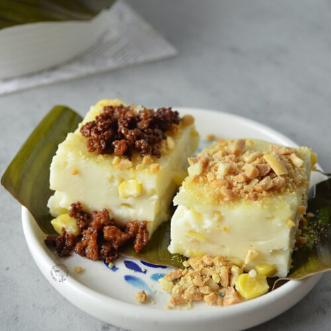

Ingredients
- 4 cups coconut milk
- 1 cup cornstarch
- 1 cup sugar
- 1 cup whole kernel corn (drained)
- 1 cup evaporated milk
- 1 cup condensed milk
- Toasted coconut flakes or grated cheese (for topping)
Instructions
- In a large pot, combine coconut milk, evaporated milk, condensed milk, and sugar. Stir until sugar dissolves.
- Add the whole kernel corn and mix well.
- Place the pot over medium heat and bring to a boil, stirring constantly to avoid lumps.
- Gradually add cornstarch while stirring, until the mixture thickens into a paste-like consistency (about 10-15 minutes).
- Pour the mixture into a greased or lined dish and smooth the top with a spatula.
- Let the mixture cool to room temperature, then refrigerate for at least 1-2 hours until set.
- Top with toasted coconut flakes or grated cheese.
- Cut into squares and serve chilled.
